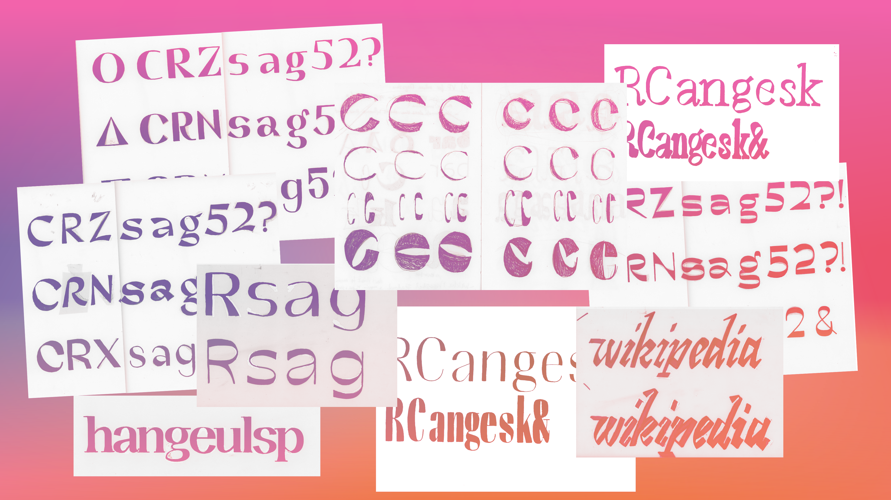
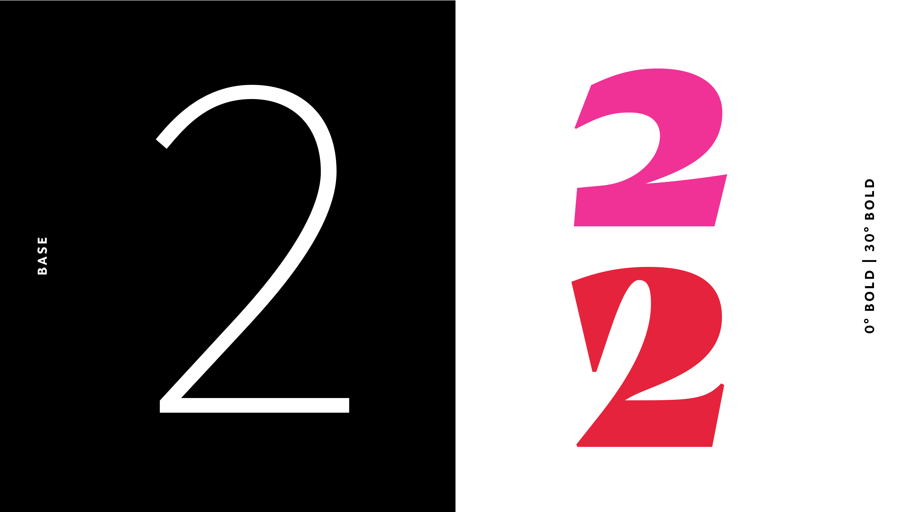
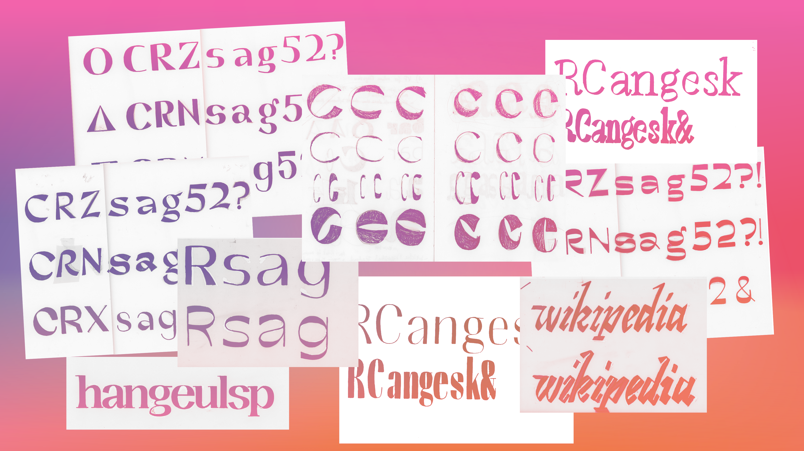
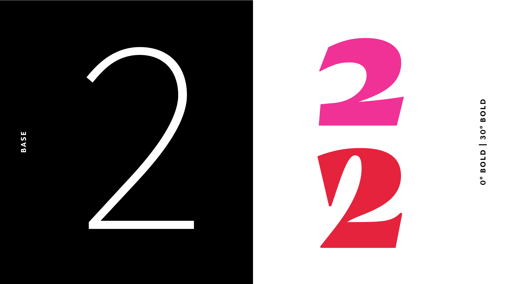
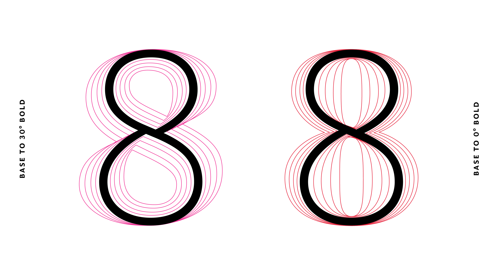
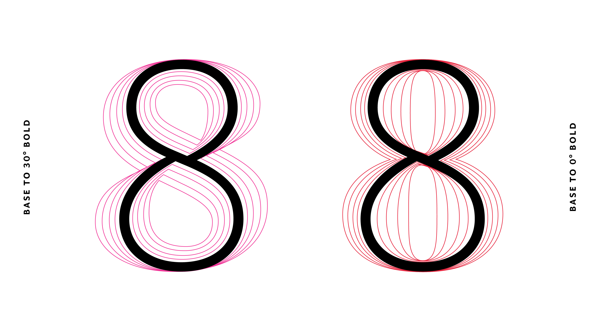

Coat
Coat is a typeface family that explores different ways contrast can be added to letter skeletons. Informed by calligraphic models, different pen angles were applied to a sans-serif letter construction. Both the Roman and Italic are tetrahedron designspaces, each with four masters spanning three axes (weight, contrast and angle). The result is a variable font that offers a wide range of styles.
Céline Odermatt
Céline Odermatt is a Switzerland-based designer. After completing her BA in Graphic Design in Lucern she trained at FontFont, which was the beginning of her deep interest in type design. Before Type and Media she had additional training at Production Type and Dalton Maag and worked with Dinamo. She now splits her time between her independent design practice and working at Lineto.


 



 
